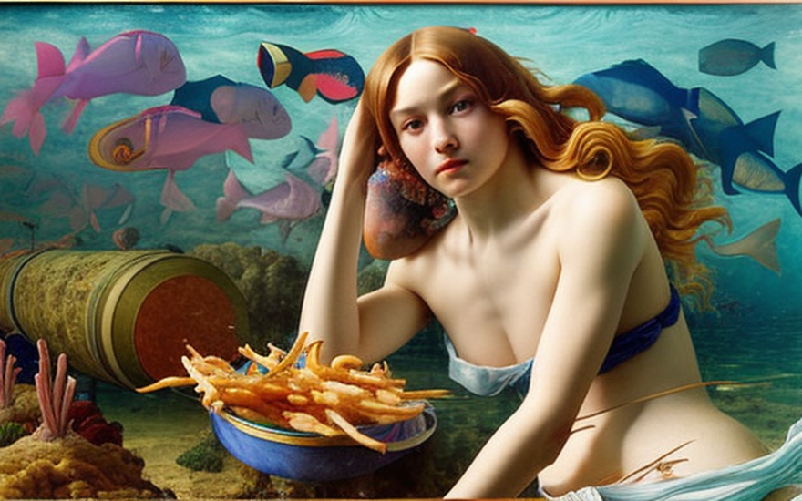
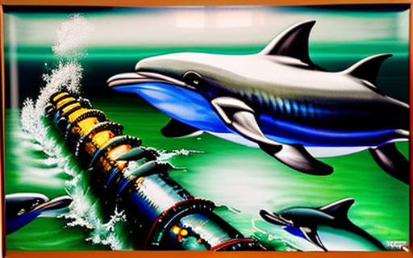
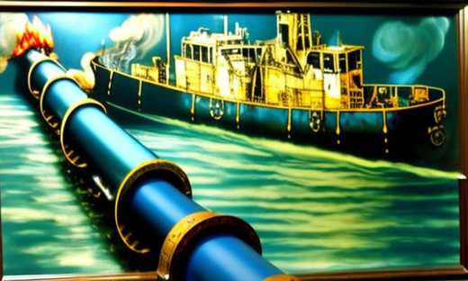
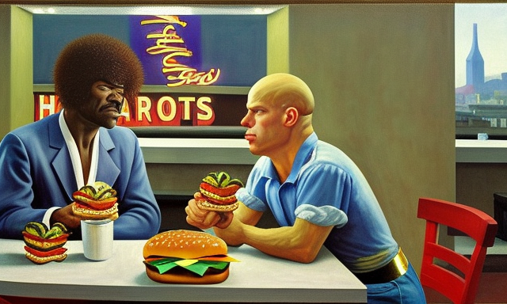
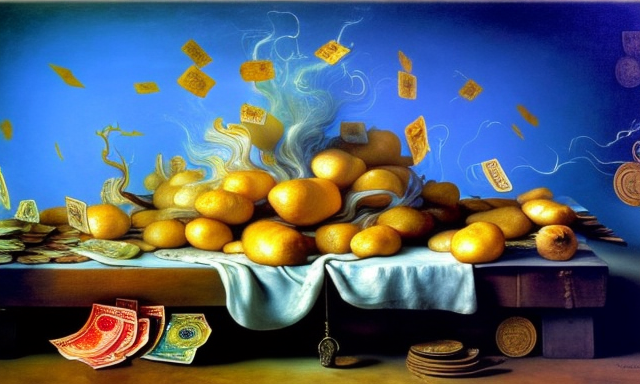

The fried potato pipeline and the dolphins
HOME
Table of Contents
Construction of the pipeline

In the depths of the ocean, a massive project was underway. A team of engineers were constructing an underwater pipeline to transport a precious commodity between two continents, fried potatoes. The pipeline would be the largest of its kind, spanning across the entire ocean floor, connecting the potato fields of the Old World to the fast food chains of the New World.
The oil used to fry the potatoes was no ordinary oil. It was a mixture of coconut and palm oil, specially formulated to provide the perfect level of crispiness to each and every fry. This oil was the lifeblood of the pipeline, and every aspect of its production and transportation was subject to intense scrutiny.
The engineers meticulously monitored the temperature and pressure of the oil as it flowed through the pipeline, ensuring that it remained within the optimal range for frying. The pipeline was lined with sensors that measured the viscosity of the oil, allowing the engineers to make real-time adjustments to the flow rate and prevent any clogging.
The pipeline was also designed to withstand the crushing pressure of the ocean depths, and the engineers worked tirelessly to reinforce the metal walls and joints. Every bolt was tightened with precision, and every weld was tested for strength.
As the pipeline neared completion, the engineers took a dive to inspect the final sections. As they descended into the murky depths, they marveled at the sheer size and complexity of the pipeline. It was a work of art, and a testament to human ingenuity.
And yet, there was a sense of unease among the engineers. For this pipeline was not just a means of transporting potatoes, it was a symbol of man’s domination over nature. The oil in the pipeline would flow for years to come, feeding the insatiable hunger of the masses for the ultimate fast food treat.
But as the engineers returned to the surface, they couldn’t shake the feeling that they had unleashed a monster. The oil in the pipeline would bring prosperity to the Old World and the New. As the pipeline began to carry its precious cargo, the engineers watched it with pride.
Attack of the dolphins

It was a beautiful day in the ocean, the sun was shining and the water was calm. But suddenly, the peace was disturbed by a loud noise coming from the underwater pipeline. The engineers were stunned to see that the pipeline was being attacked by a group of dolphins. These were not just any ordinary dolphins, they were smart dolphins, who had learned to steal potatoes and ketchup from the pipeline.
The engineers watched in awe as the dolphins worked together, using their intelligence and agility to infiltrate the pipeline. They would swim up to the pipeline, take a potato in their beaks and then swim away with it, deftly avoiding the powerful flow of oil. They were so fast and nimble that the engineers struggled to keep up with their movements.
They soon realized that the dolphins were not just stealing the potatoes, but also the ketchup that was being transported along with the oil. They were intelligent creatures who had figured out that the ketchup was the perfect accompaniment to the potatoes, and they were determined to get their hands on it.
The engineers were amazed by the dolphins’ intelligence and resourcefulness, but they also knew that they needed to stop them. They quickly came up with a plan to secure the pipeline and prevent the dolphins from accessing the potatoes and ketchup.
They installed powerful nets around the pipeline to block the dolphins’ path, and added guards to patrol the area and chase away any intruders. The engineers also developed new technologies to detect the presence of the dolphins and alert the guards to their movements.
Despite these measures, the dolphins continued to attack the pipeline, determined to get their hands on the precious potatoes and ketchup. The engineers were in a constant battle to prevent the dolphins from stealing their cargo, and the situation soon became a war between man and beast.
As the battle raged on, the engineers began to understand the true nature of the dolphins. They were not just smart creatures, but also playful and curious, with a sense of mischief and adventure. The engineers began to respect the dolphins, and even to admire them, as they marveled at their intelligence and determination.
Destruction of the pipeline

The war between the engineers and the smart dolphins had reached a critical point. The fast food company that owned the pipeline was facing massive losses due to the dolphins’ constant raids, and they were determined to put an end to the problem. They decided to destroy the pipeline, once and for all.
The fast food company sent a massive ship to the site, loaded with explosives and a crew of specialists tasked with detonating the pipeline. The engineers watched in horror as the ship approached, knowing that the pipeline was about to be destroyed, and with it, their livelihood.
As the ship reached the pipeline, the crew began the preparations for the explosive charges. They carefully placed the charges along the length of the pipeline, ensuring that the explosion would be powerful enough to destroy it completely.
The engineers could do nothing but watch as the charges were detonated, and the pipeline was blown apart, sending a huge plume of oil and potatoes and ketchup into the open sea. The oil, potatoes and ketchup flowed out of the pipeline, spilling into the ocean, creating a massive spill that stretched for miles.
The engineers were horrified by the sight, and they quickly realized the magnitude of the disaster they had unleashed. The oil, potatoes and ketchup would not only harm the ocean and its inhabitants, but it would also have a devastating impact on the food chain, affecting everything from the smallest plankton to the largest whales.
Loss of flavor

Days after the disaster of the pipeline, two men sat in a fast food restaurant, enjoying their hamburgers. But as they bit into their burgers, they quickly realized something was missing. There were no potatoes to dip into the sauce, no crispy fried bites to add to the flavor of their meal.
The men looked at each other, both feeling a sense of dissatisfaction. They had been looking forward to the potatoes all day, and now they were gone, replaced by a lackluster hamburger that lacked the satisfying crunch and flavor they had come to expect.
One of the men took a deep breath, trying to calm himself. He knew that it wasn’t the end of the world, that there were other things to enjoy in life. But as he took another bite of the hamburger, he couldn’t help but feel that something was missing.
The other man nodded, knowing exactly what his friend was feeling. He had experienced the same thing, and he too was struggling to come to terms with the absence of the potatoes. He took a sip of his drink, trying to wash down the bland taste of the hamburger, but it was no use.
The two men continued to eat their hamburgers in silence, both lost in their thoughts. They thought about the disaster that had befallen the pipeline, about the smart dolphins that had caused so much trouble, and about the fast food company that had destroyed it all. They wondered what had happened to the potatoes, and why they were no longer available.
As they finished their meal and left the fast food restaurant, the two men couldn’t help but feel a sense of emptiness. They had come looking for a satisfying meal, and instead they had found only disappointment. They walked away from the restaurant, their thoughts heavy, as they pondered the world they lived in, and the impact of their actions on the planet and its creatures.
Revival of the potato market

As the news of the pipeline disaster spread, the world was shocked by the consequences of the event. The destruction of the pipeline had cut off a major source of potatoes, causing prices to skyrocket as demand for the delicious fried bites outstripped supply.
The fast food industry was hit hard by the price increases, as potatoes became a scarce and valuable commodity. Companies scrambled to find alternative sources of potatoes, but many were unable to meet the demand of their customers, who were used to having their potatoes served with every meal.
In response to the shortage, a new shipping industry emerged, focused on transporting potatoes from one continent to another by ship. The ships were loaded with sacks of freshly harvested potatoes, making the journey across the ocean to bring the precious cargo to the fast food restaurants.
The shipping industry boomed, as demand for potatoes continued to grow, and the price of potatoes continued to rise. Entrepreneurs and investors saw the potential for profit, and they poured money into the industry, building larger and more efficient ships, and investing in new technologies to speed up the transport of potatoes from one place to another.
As the shipping industry flourished, the economy was transformed. New jobs were created, as workers were needed to grow, harvest, and transport the potatoes. Companies that had been struggling to keep up with demand for potatoes became profitable again, and the fast food industry was once again able to provide customers with the delicious fried bites they had come to love.
The destruction of the pipeline had changed the world forever, but in the end, it had brought about a new era of prosperity, as the potato material became a valuable commodity, and the shipping industry rose to meet the demand. And as the ships continued to cross the ocean, carrying their precious cargo of potatoes, people all over the world were able to enjoy the simple pleasure of dipping their fries into a rich and tangy ketchup.